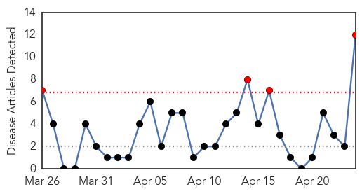
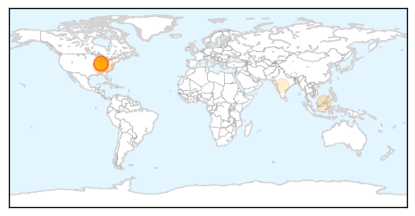
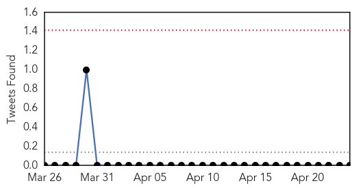

Hepatitis
30-Day Web Trend
4 alerts, 0 warnings

30-Day Twitter Trend
0 alerts, 0 warnings

Article Locations
Article Confidences

Top Articles:
- 0.903
- Indiana HIV outbreak triggers national alert
- 0.792
- CDC Alert: HIV And Hepatitis C Co-Infection Outbreaks Could Result From IV Drug Use
- 0.792
- HIV Outbreak In Indiana Raises Alarm Over Injected Painkillers
- 0.781
- Indiana HIV outbreak grows, prompts national alert
- 0.760
- CDC sounds alarm over Indiana HIV outbreak
- 0.754
- HIV Cases increased to 142 in Rural Part of Southeastern Indiana
- 0.671
- Brunei’s achievements highlighted at launching of Immunisation Week
- 0.641
- CDC: Indiana HIV outbreak is 'tip of the iceberg' of a national drug abuse problem
- 0.637
- Indiana HIV outbreak, hepatitis C epidemic sparks CDC alert
- 0.590
- Putnam hires new threat prep coordinator
- 0.564
- Drug-Related HIV Outbreak Spurs Nationwide Alert
- 0.518
- World Immunisation Week: Parents need to be educated about importance of vaccinations, says Dr Raghuram
Top Tweets:
-
No tweets found for Apr 24, 2015
Measles
30-Day Web Trend
0 alerts, 0 warnings

30-Day Twitter Trend
0 alerts, 0 warnings

Article Locations

Article Confidences

Top Articles:
- 0.983
- Doctor turns away new patients without measles vaccine
- 0.976
- News Scan for Apr 23, 2015
- 0.970
- Winnipeg woman contracted measles while travelling in Africa
- 0.964
- UNICEF, partners support mass vaccination campaign in Sudan --China Economic Net
- 0.945
- Immunization drive under way for 3 million children in Ebola-hit countries
- 0.940
- Manitoba's Second Case of Measles Reported
- 0.899
- Second case of measles reported
- 0.870
- In Our View: A Dose of Prevention
- 0.837
- Yemen: UN agency warns of deteriorating health situation amid ongoing fighting
- 0.809
- One child in five still not vaccinated, says WHO
- 0.725
- WHO promotes vaccination to eradicate measles
- 0.722
- Guest Column: Skepticism over vaccines a growing problem
- 0.703
- Adults urged to make sure they get anti-measles jabs as cases rise
- 0.683
- UN mulls sending staff back to Yemen
- 0.578
- Vietnam observes WHO Immunisation Week
- 0.559
- Progress towards global vaccination targets 'far off track'
Top Tweets:
-
No tweets found for Apr 24, 2015